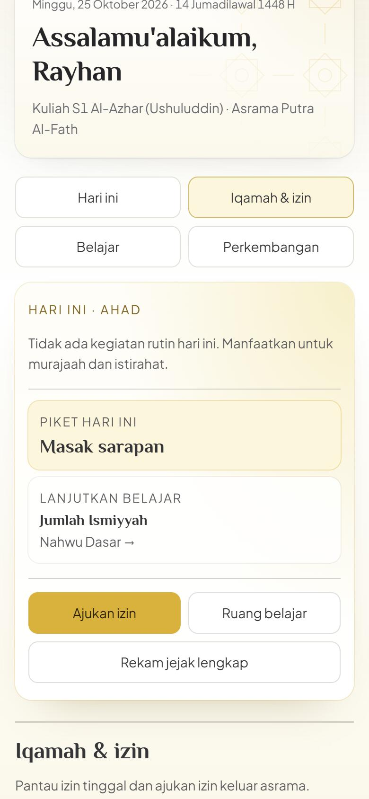

Ust. H. Ifdoni Nur Syamsi
Founder Hamasah International
- Menyetujui arah, prioritas, dan biaya sistem, termasuk biaya AI
- Menetapkan periode penerimaan setiap tahun
- Memberi persetujuan akhir sebelum sistem dibuka untuk wali dan santri
Pendaftaran, berkas, kloter, asrama, kelas online dengan video, asisten AI, tagihan, dan kabar untuk wali dalam satu portal. Semua tampilan di halaman ini diambil langsung dari aplikasinya.


Tangkapan layar asli aplikasi, dengan akun contoh.
Biaya AI, data kesehatan, aturan akun, sampai izin membuka sistem untuk wali dan santri disetujui oleh dua pimpinan berikut. Tim teknis menyiapkan bahan dan menjalankan keputusannya.
Founder Hamasah International

Direktur Hamasah International Regional Mesir
Calon santri, wali, musyrif, guru, petugas, keuangan, dan pimpinan bekerja di dua negara dengan jam berbeda. Sistem ini membuat mereka melihat data yang sama, sesuai hak masing-masing, tanpa harus saling menanyakan lewat chat.
Tahap pendaftaran, berkas yang kurang, kloter, dan visa bisa dicek kapan saja.
Presensi sholat, setoran hafalan, izin, materi, dan nilai tersimpan di satu tempat.
Invoice dan kuitansi bernomor otomatis. Koreksi dan pembatalan wajib beralasan.
Satu layar menunjukkan visa hampir habis, tagihan lama, dan pendaftar yang belum disentuh.
Pilih peran. Setiap layar adalah tangkapan asli aplikasi dengan akun contoh. Angka bernomor menandai bagian yang paling sering dipakai peran itu.
Halaman Pantau Ananda. Satu akun wali bisa terhubung ke beberapa ananda.
123Beranda santri merangkum hari ini dalam satu layar.

1234Monitoring Asrama, tab Presensi asrama.
 12345
12345Kelola Maddah, tab Kurikulum.
 12345
12345Pendaftaran, Daftar calon santri masuk.
 1234
1234Keuangan & SPP, daftar invoice.
 12345
12345Portal Utama, Konsol eksekutif.
123Santri membuka maddah yang diikutinya, menonton video pertemuan langsung di portal, membaca bacaan pendamping, mengunduh modul PDF, lalu menandai selesai. Guru melihat progresnya per santri.


Asisten AI hanya memakai isi situs dan materi pengajar sebagai sumber jawaban. Ada batas pertanyaan per jam dan per hari. Bila layanan AI gagal atau kuota habis, sistem otomatis kembali ke jawaban lokal sehingga tidak pernah macet.
Di setiap pertemuan, santri bisa meminta penjelasan sederhana, contoh, atau ringkasan poin penting. Jawabannya disusun dari ringkasan materi pengajar.
Calon pendaftar dan wali bertanya soal biaya, syarat, dan program. Jawaban hanya dari isi situs, dan bila perlu diarahkan ke WhatsApp admin.
Musyrif cukup menulis cerita singkat hari itu. AI mengusulkan catatan per santri, lalu musyrif meninjau sebelum menyimpan. Yang dikirim hanya cerita dan nama depan santri.
Pilih peran. Di kiri terlihat menu yang benar-benar tampil di sidebar akun itu. Di kanan ada halaman dan tab yang bisa dibuka, langkah kerja yang bisa diputar, dan hal yang sengaja tidak bisa dibuka.
Tangkapan asli dari layar lebar dengan akun contoh. Pengurus di kantor dan musyrif di asrama memakai sistem yang sama.


Tiap tahap memakai bagian sistem yang berbeda, dan setiap perubahan mencatat siapa yang mengubah dan kapan.
Formulir, persetujuan data, kode akses pendaftar.
Petugas menilai dokumen dan mengatur tindak lanjut.
Jadwal berangkat dan pelacak visa pelajar.
Kamar, jadwal, piket, dan uang kas.
Kelas online, presensi, hafalan, asisten AI.
Dashboard, rapor PDF, tagihan, kuitansi.
Yang dilihat wali sama dengan yang dicatat musyrif. Yang dibayar tercatat dengan nomor kuitansi. Yang dijawab asisten AI berasal dari materi Hamasah sendiri.
Wali dan santri hanya membuka santri yang terhubung dengan akunnya. Musyrif hanya asramanya. Guru hanya maddah miliknya.
Kata sandi disimpan sebagai hash. Memblokir akun atau mengganti email mencabut sesi lama.
Dokumen disimpan di penyimpanan privat. Data kesehatan mati secara bawaan sampai kebijakan privasi memuatnya.
Asisten hanya menerima pertanyaan dan potongan materi. Cerita AI musyrif hanya menerima cerita dan nama depan santri.
Koreksi tagihan, pembatalan, unduhan kuitansi, dan perubahan status tercatat di Jejak Audit.
Pesan ke wali disiapkan sistem, lalu dikirim petugas setelah memeriksa isinya.
Disarikan dari catatan keputusan pengurus 24 September 2026. Status terbaru tiap butir dikonfirmasi saat presentasi.
AI dibayar per pertanyaan. Tetapkan batas pertanyaan per jam untuk tiap santri dan batas jawaban AI per hari, supaya biaya bulanan terkendali.
Prinsipnya sudah disetujui. Dinyalakan bersamaan dengan kebijakan privasi yang memuat data kesehatan dan pemrosesan oleh penyedia AI.
Sudah dijawab “dihapus setelah jangka waktu tertentu”. Lamanya belum ditetapkan, misalnya 12 bulan.
Apakah kata sandi dari admin kedaluwarsa dalam beberapa hari, dan wajib diganti saat masuk pertama?
Persetujuan akhir ada pada Ust. H. Ifdoni Nur Syamsi dan Ust. Aji Nugeroho, Lc. Penguji tujuh peran perlu ditunjuk dari tim.
Pengingat kini dikirim manual dari konsol. Notifikasi otomatis butuh akses domain dan pengirim email atau WhatsApp resmi.
Mulai dari minggu pertama: siapkan akun dan data, uji tiap peran bersama orang yang akan memakainya, lalu buka bertahap dengan persetujuan Ust. Ifdoni dan Ust. Aji.
Kembali ke atas